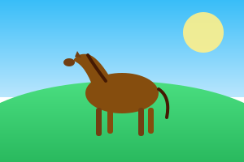
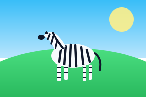

✨ ỨNG DỤNG ĐỈNH CAO SỐ 1 • UNPAIRED IMAGE TRANSLATION
CycleGAN: Máy Biến Đổi Thế Giới (Không Cần Cặp Dữ Liệu)
Bạn muốn biến chú ngựa thường thành ngựa vằn, hay biến mùa hè thành mùa đông đầy tuyết? CycleGAN có thể làm điều kỳ diệu này mà không cần bạn phải chụp sẵn 2 bức ảnh y hệt nhau ở cả hai thế giới!
Bước 1: Miền Gốc (Domain A)
Ảnh Thật

Hình ảnh đầu vào nguyên bản do bạn cung cấp.
Bước 2: Máy Tạo 1: $G_{A \to B}(x)$
Biến Đổi AI

Generator $G$ học cách thêm họa tiết/phong cách mới mà vẫn giữ nguyên bố cục.
Bước 3: Máy Tạo 2: $F_{B \to A}(y)$
Tái Tạo Khép Kín
Generator $F$ dịch ngược lại để kiểm tra: $F(G(A)) \approx A$.
💡 Bí mật của CycleGAN: Vòng lặp dịch thuật khép kín!
Nếu bạn dịch câu "Con mèo trèo cây cau" sang Tiếng Anh rồi dịch ngược lại Tiếng Việt, câu nhận được phải giữ nguyên nghĩa gốc. Cycle Consistency Loss phạt mô hình nếu ảnh phục hồi ở Bước 3 khác biệt với Bước 1!